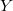
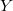

| SPSSによる統計的データ解析入門 |
| SPSSによる統計的データ解析入門 |
ここまで基本的な記述統計量の算出を行ったが，これでは各変数ごとの情報しか得られない。 相関係数を算出することで，複数（基本的には2つ）の変数間相互の関係を知ることが可能となる。 ここでいう「変数間相互の関係」とは，例えば「国語の成績が高い人ほど英語の成績も高いという傾向がある」といった情報のことである。
変数 およびの間の相関係数は以下の式で計算される。 1
およびの間の相関係数は以下の式で計算される。 1
| (1) | ||||
 |
(2) |
このうち，はとの共分散， およびをとの標準偏差である。
およびをとの標準偏差である。
相関係数は2変数が完全に正の直線的な関係にある場合1を，負の直線的な関係にある場合-1の値を取る。 また2変数間に直線的な関係が認められない場合は0となる。 *ページの図は相関係数の値とそれに対応する2変数間の散布図を示したものである。
ただし，相関係数はあくまで2変数間の「直線的」な関係を示すものであり，仮に曲線的な関係にあった場合，それを正しく検出することはできない。 2 また，サンプルが何らかの変数によって群分けされているような場合や変数の範囲について切断が生じている場合にも不適切な相関係数が算出される可能性がある。 従って，相関係数を算出するだけでなく必ず散布図も出力して視覚的に関係性を確認することが重要である。
データエディタのメニューバーから[分析]-[相関]-[2変量]の順でクリックする。
![\includegraphics[width=12cm]{soukan1.ps}](images/img-0018.png)
「2変量の相関分析」というウィンドウが立ち上がる。
![\includegraphics[width=8cm]{soukan2.ps}](images/img-0019.png)
分析の対象としたい変数を選択して[ ]ボタンをクリックし左から右のボックスに移す。
![\includegraphics[width=8cm]{soukan3.ps}](images/img-0020.png)
[OK]を押すとSPSSビューアが立ち上がり，結果が表示される。
![\includegraphics[width=15cm]{soukan4.ps}](images/img-0021.png)
この例の場合，国語と数学では.312，国語と英語では.580，数学と英語では.588という相関係数の値が得られた。 相関の大きさとしては各教科とも中程度の大きさの相関があったといえる。
また同時に統計的検定がなされ，その結果が有意確率および有意であることを表すシンボル（“ * "や“ ** "）によって表示されている。
統計的検定とは，ある仮説（一般には「帰無仮説」と呼ばれる）の真偽について，統計学的に意思決定を行う手法のことである。 統計的検定では，帰無仮説とよばれる仮説が設定され，これを非合理的なものとして棄却するかどうかが興味の関心である。 帰無仮説としては，通常「相関係数はゼロである」や「実験の効果はゼロである」といった「点ゼロ仮説」が設定される。 そして実際にデータを取ってみて，そのデータと帰無仮説とが整合的かどうかを統計学の理論にもとづいて判断する。
「統計的に有意であった」とは，「帰無仮説が棄却された」ということと等しい。 すなわち，「得られたデータから察するに相関係数がゼロであるという仮説を受け入れるのは非合理的だ」という判断を下したことになる。 必ずしも「大きな相関が得られた」など効果の大きさを意味するわけではないので注意が必要である。 3
また，「有意確率」とは，「仮に帰無仮説が正しいとした場合に今回得られたようなデータが得られる確率」のことである。 よく「帰無仮説が正しい確率」と誤解されることがあるが，これは間違っている。 帰無仮説は合っているか間違っているかのどちらかであり，確率的に判断することはできないというのが通常の統計学の立場である。 4
メニューバーから[グラフ]-[散布図]の順に選択する。
![\includegraphics[width=12cm]{sampuzu1.ps}](images/img-0022.png)
「散布図」ウィンドウが立ち上がるので，「行列」を選択して[定義]をクリックする。 5
「散布図の行列」ウィンドウが立ち上がるので，散布図を出したい変数を左のボックスから選択して右のボックスに移動させる。
![\includegraphics[width=8cm]{sampuzu3.ps}](images/img-0024.png)
この場合は，「国語」，「数学」，「英語」3つの変数をすべて選択した。
できたら[OK]ボタンをクリックする。
SPSSビューアが立ち上がり，3つの変数のそれぞれの組について散布図が行列形式で表示される。 この例では特に目立った外れ値などは見出せない。 6
Footnotes
| SPSSによる統計的データ解析入門 |